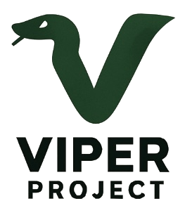

A complete compiler platform built entirely from scratch — two languages, native codegen, 226-class runtime, zero dependencies
Pre-alpha · v0.2.3-snapshot · GPL-3.0
Write in Zia or BASIC. Compile to typed IL. Run in the VM or go native.
module Hello;
bind Viper.Terminal;
bind Fmt = Viper.Fmt;
func start() {
var x = 2 + 3;
var y = x * 2;
Say("HELLO");
Say(Fmt.Int(y));
}DIM x AS INTEGER = 2 + 3
DIM y AS INTEGER = x * 2
PRINT "HELLO"
PRINT yil 0.2.0
extern @Viper.Fmt.Int(i64) -> str
extern @Viper.Terminal.Say(str) -> void
global const str @.L0 = "HELLO"
func @main() -> void {
entry_0:
%t0 = iadd.ovf 2, 3
%t1 = alloca 8
store i64, %t1, %t0
%t2 = load i64, %t1
%t3 = imul.ovf %t2, 2
%t4 = alloca 8
store i64, %t4, %t3
%t5 = const_str @.L0
call @Viper.Terminal.Say(%t5)
%t6 = load i64, %t4
%t7 = call @Viper.Fmt.Int(%t6)
call @Viper.Terminal.Say(%t7)
ret
}Native ARM64 code generated from scratch — no LLVM, no external toolchain
| Benchmark | Viper Native | C -O0 | C -O2 | Rust -O | Java | Python |
|---|---|---|---|---|---|---|
| branch_stress | 29ms | 56ms | 51ms | 51ms | 71ms | 2,490ms |
| udiv_stress | 39ms | 218ms | 34ms | 85ms | — | — |
| call_stress | 31ms | 74ms | 17ms | 16ms | 46ms | 2,298ms |
| inline_stress | 58ms | 202ms | 25ms | 17ms | — | — |
| mixed_stress | 27ms | 35ms | 24ms | 26ms | 50ms | 2,193ms |
| fib_stress | 334ms | 381ms | 197ms | 192ms | 184ms | 7,243ms |
| arith_stress | 83ms | 126ms | 15ms | 16ms | 65ms | 13,337ms |
| string_stress | 19ms | 29ms | 26ms | 17ms | 39ms | 66ms |
| redundant_stress | 73ms | 178ms | 24ms | 17ms | — | — |
Apple M4 Max · 10 iterations, 2 warmup · Identical algorithms across all languages · March 2026
A complete platform built entirely from scratch
No LLVM, no Boost, no SDL, no libcurl. Custom assemblers, linkers, optimizer passes, and a 226-class runtime — every line is Viper's own.
Hand-written binary encoders and linkers emit ELF, Mach-O, and PE executables for both ARM64 and x86-64 — with PAC/BTI security hardening on AArch64.
Zia (modern: entities, generics, pattern matching) and BASIC (classic with OOP) both compile through a typed SSA intermediate language. Build your own frontend too.
SCCP, GVN, LICM, inlining, loop unrolling, strength reduction, dead store elimination with MemorySSA, and more — plus backend peephole optimizers.
Graphics, sprites, tilemaps, audio, HTTP, WebSocket, TLS, crypto, threading, GUI widgets, JSON/YAML/XML parsing, 2D physics — all from scratch in portable C.
Every program produces identical output on the VM and as a native binary. Iterate fast on the interpreter, ship native with confidence.
Chess with AI, a SQL database, a multi-threaded web server, an IDE with IntelliSense, Pac-Man — all written in Viper's own languages.
macOS, Linux, and Windows with full parity. Platform-native graphics (Cocoa/X11/Win32), audio (AudioQueue/ALSA/WASAPI), and networking.
1,984 tests across unit, golden, E2E, and fuzz suites. Sanitizer CI (ASan, UBSan, TSan). 509K lines of production code. 4,197 commits.
Real applications and games built on the platform
PostgreSQL-compatible engine with MVCC, WAL, B-tree indexes, and wire protocol.
AppCode editor with tabs, find/replace, syntax highlighting, and integrated build.
AppFull chess engine with alpha-beta AI, transposition tables, and canvas UI.
Zia2D platformer with physics, parallax scrolling, particles, and boss fights.
ZiaDrawing application with 8 tools, shapes, color picker, and undo/redo.
AppArcade clone with ghost AI, animations, and tile-based rendering.
ZiaFrom source to native binary through a typed intermediate language
Clone, build, and run your first program in under a minute
# Clone and build git clone https://github.com/splanck/viper.git cd viper ./scripts/build_viper.sh # Create a new project viper init my-app viper run my-app # Or run an existing demo viper run examples/games/pacman/ # Try the interactive REPL viper repl